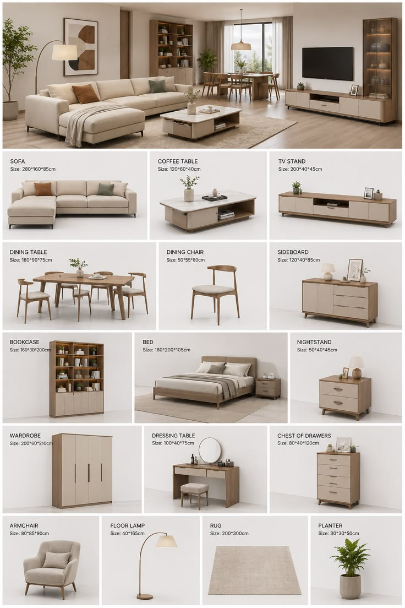
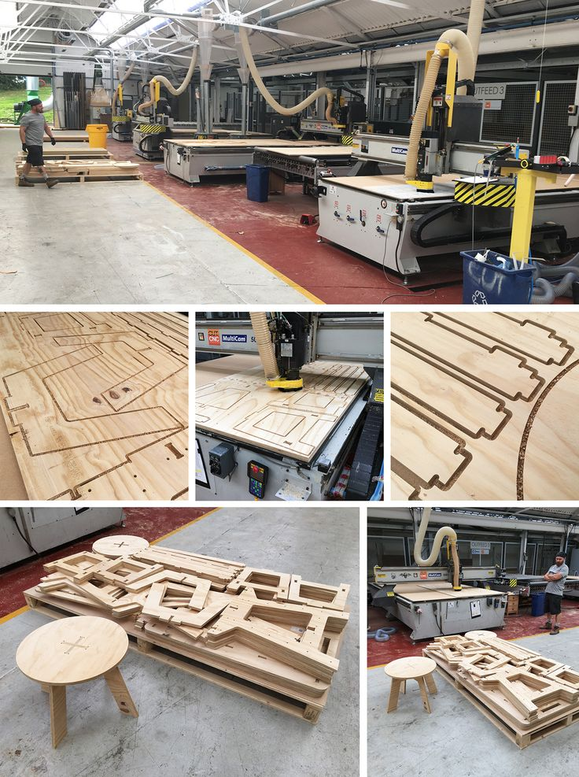
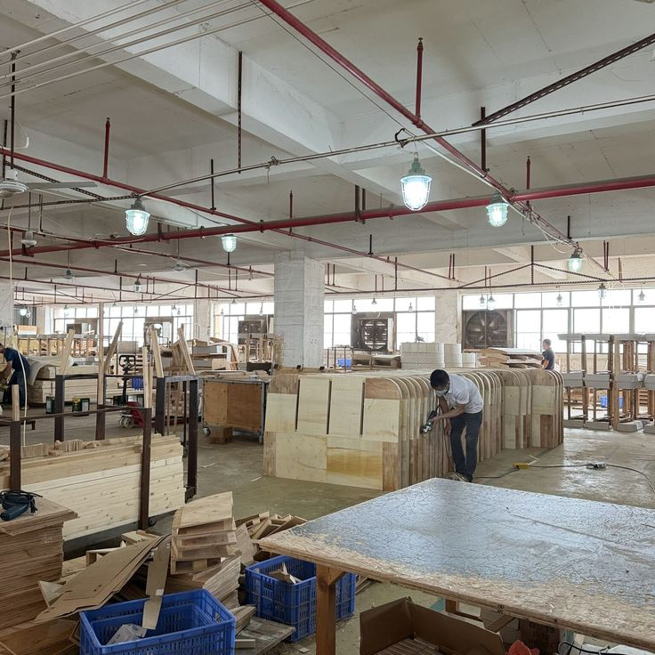
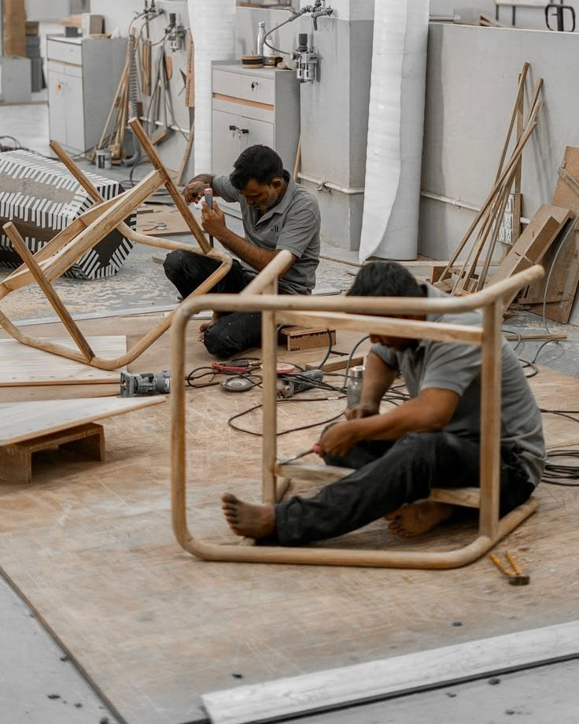
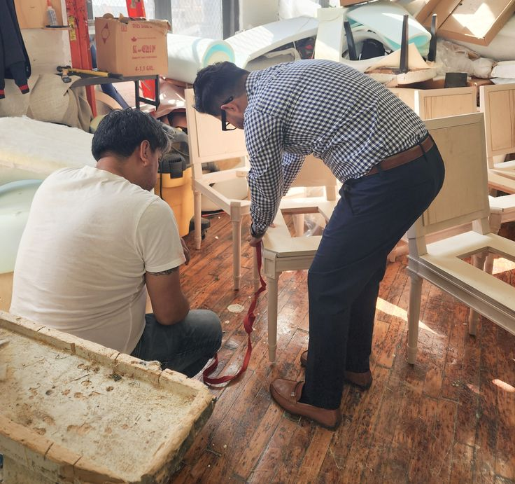
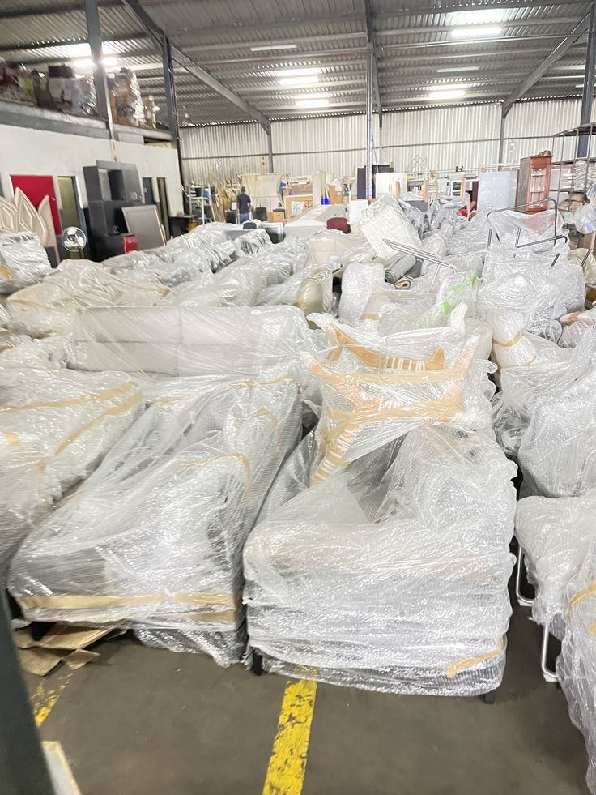

From Materials to Finished Furniture
Our manufacturing approach brings together material selection, skilled workmanship and careful attention to finishing. Each project is handled according to its design, specifications and order requirements.

Material Selection
We source suitable raw materials and components based on the furniture design, quality requirements and project specifications.

Cutting & Machining
Materials are measured, cut and prepared to the required dimensions and shapes for each furniture component.

Production & Assembly
Individual components are assembled with attention to structure, fit, stability and the intended design.

Surface Finishing
Furniture receives the required surface preparation and finishing according to the agreed specifications.

Quality Checks
Products are checked for dimensions, appearance, finish and overall workmanship before dispatch.

Packing & Supply
Finished furniture is prepared for packing and delivery according to the order and destination requirements.
Our Production Approach
We work with a combination of in-house manufacturing activities and specialised external suppliers where a project requires particular components or processes.
Production planning is guided by order specifications, quantities, material availability and agreed delivery schedules.
Quality & Attention to Detail
- Material selection based on project requirements
- Attention to dimensions and design specifications
- Careful assembly and finishing
- Inspection before packing and dispatch
- Focus on reliable supply and customer requirements